🏆 EURO 2024 Matches
| Date | Fixture |
Odds |
Win |
Result |
Over ⚽ = over 0.5 ⚽⚽ = over 1.5 ⚽⚽⚽ = over 2.5 ... ► |
Alerts Home 🏥 = Considerable injuries 🏥🏥 = Major injuries 📉 = Dip in form Note, you may see injuries when expanding match but no alert here, meaning the model does not consider them important. |
Alerts Away 🏥 = Considerable injuries 🏥🏥 = Major injuries 📉 = Dip in form Note, you may see injuries when expanding match but no alert here, meaning the model does not consider them important. |
|
|---|---|---|---|---|---|---|---|---|
| Sat. 22 Jun. | Türkiye 0:3 Portugal Form: LWLW Form: WWWL |
-1.24 vs 1.17 | 1.63 | 72% | 1 | ⚽⚽ 2.87 |
📉 Home team has a dip in form recently | 📉 Away team has a dip in form recently |
| Sat. 22 Jun. | Belgium 2:0 Romania Form: WLWD Form: DWLD |
0.71 vs -0.72 | 1.52 | 59% | 1 | 😴 0.21 |
📉 Home team has a dip in form recently | 📉 Away team has a dip in form recently |
| Sat. 22 Jun. | Georgia 1:1 Czech Republic Form: WLDW Form: WLDL |
-0.01 vs 0.01 | 1.82 | 10% | 0.5 | ⚽⚽ 2.74 |
📉 Home team has a dip in form recently | 📉 Away team has a dip in form recently |
🏆 Copa America 2024 Matches
| Date | Fixture |
Odds |
Win |
Result |
Over ⚽ = over 0.5 ⚽⚽ = over 1.5 ⚽⚽⚽ = over 2.5 ... ► |
Alerts Home 🏥 = Considerable injuries 🏥🏥 = Major injuries 📉 = Dip in form Note, you may see injuries when expanding match but no alert here, meaning the model does not consider them important. |
Alerts Away 🏥 = Considerable injuries 🏥🏥 = Major injuries 📉 = Dip in form Note, you may see injuries when expanding match but no alert here, meaning the model does not consider them important. |
|
|---|---|---|---|---|---|---|---|---|
| Sat. 22 Jun. | Ecuador 1:2 Venezuela Form: WWLW Form: DLDW |
0.16 vs -0.48 | n/a | 23% | 0 | 😴 0.04 |
📉 Home team has a dip in form recently | 🏥 📉 Away team has considerable injuries and a dip in form recently |
| Sat. 22 Jun. | Peru 0:0 Chile Form: DWDL Form: LWDL |
-0.16 vs -0.12 | 3.85 | 8% | 0.5 | 😴 0 |
📉 Home team has a dip in form recently | 🏥 📉 Away team has considerable injuries and a dip in form recently |
🌍 Global Matches
| Date | Fixture |
Odds |
Win |
Result |
Over ⚽ = over 0.5 ⚽⚽ = over 1.5 ⚽⚽⚽ = over 2.5 ... ► |
Alerts Home 🏥 = Considerable injuries 🏥🏥 = Major injuries 📉 = Dip in form Note, you may see injuries when expanding match but no alert here, meaning the model does not consider them important. |
Alerts Away 🏥 = Considerable injuries 🏥🏥 = Major injuries 📉 = Dip in form Note, you may see injuries when expanding match but no alert here, meaning the model does not consider them important. |
|
|---|---|---|---|---|---|---|---|---|
| Sat. 22 Jun. | Deportivo Miranda FC 20:30 Metropolitanos FC Form: DDLW Form: LLLW |
-17.31 vs 16.58 | 1.01 | 99% | None | ⚽ 1.65 |
📉 Home team has a dip in form recently | 📉 Away team has a dip in form recently |
| Sat. 22 Jun. | Chongqing Tonglianglong 3:6 Shandong Taishan Form: DWWW Form: DWDW |
-5.08 vs 4.46 | 1.22 | 99% | 1 | ⚽⚽ 2.09 |
||
| Sat. 22 Jun. | Jiangxi Lushan 0:3 Zhejiang FC Form: LLDL Form: WLWW |
-4.85 vs 4.27 | 1.08 | 99% | 1 | ⚽⚽⚽ 3.29 |
📉 Home team has a dip in form recently | 📉 Away team has a dip in form recently |
| Sat. 22 Jun. | Suzhou Dongwu 0:4 Beijing Guoan Form: DDWW Form: DWLW |
-4.16 vs 3.71 | 1.22 | 97% | 1 | ⚽⚽ 2.53 |
📉 Away team has a dip in form recently | |
| Sat. 22 Jun. | Kaya FC-Iloilo 6:0 Philippine Army FC Form: LWWW Form: LLLL |
2.0 vs -2.67 | n/a | 80% | 1 | ⚽⚽⚽⚽ 4.57 |
📉 Away team has a dip in form recently | |
| Sat. 22 Jun. | Qingdao Red Lions 0:2 Shenzhen Peng City Form: DDWL Form: DLWW |
-1.82 vs 1.52 | n/a | 75% | 1 | ⚽ 1.67 |
📉 Home team has a dip in form recently | 📉 Away team has a dip in form recently |
| Sat. 22 Jun. | Lokomotiv Gomel 3:2 ABFF U17 Form: LDLL Form: LLLW |
1.4 vs -2.4 | n/a | 74% | 1 | ⚽ 1.61 |
📉 Home team has a dip in form recently | 📉 Away team has a dip in form recently |
| Sat. 22 Jun. | CA Peñarol Unknown Club Deportivo Maldonado Form: WWLD Form: LDLD |
1.35 vs -2.41 | n/a | 73% | None | ⚽ 1.59 |
🏥 📉 Home team has considerable injuries and a dip in form recently | 📉 Away team has a dip in form recently |
| Sat. 22 Jun. | Cibao FC 3:2 Atlético Pantoja Form: DWWD Form: LLWD |
1.21 vs -1.84 | n/a | 72% | 1 | ⚽⚽ 2.07 |
📉 Away team has a dip in form recently | |
| Sat. 22 Jun. | Türkiye 0:3 Portugal Form: LWLW Form: WWWL |
-1.24 vs 1.17 | 1.63 | 72% | 1 | ⚽⚽ 2.87 |
📉 Home team has a dip in form recently | 📉 Away team has a dip in form recently |
| Sat. 22 Jun. | United City FC 3:0 Mendiola FC 1991 Form: LDWD Form: LLLW |
1.15 vs -2.03 | 1.39 | 72% | 1 | ⚽⚽⚽⚽ 4.13 |
📉 Home team has a dip in form recently | 📉 Away team has a dip in form recently |
| Sat. 22 Jun. | Grobinas SC/LFS 0:6 Riga FC Form: LWLW Form: WDWW |
-1.56 vs 1.11 | 1.1 | 71% | 1 | ⚽⚽ 2.47 |
📉 Home team has a dip in form recently | |
| Sat. 22 Jun. | Club Nacional Unknown Rampla Juniors FC Form: LWLW Form: WLDL |
1.08 vs -1.96 | n/a | 71% | None | ⚽⚽ 2.66 |
📉 Home team has a dip in form recently | 📉 Away team has a dip in form recently |
| Sat. 22 Jun. | Shijiazhuang Gongfu 5:6 after pensafter pens Qingdao West Coast Form: WLLD Form: DLLW |
-1.64 vs 0.95 | 2.5 | 68% | 1 | ⚽ 1.84 |
📉 Home team has a dip in form recently | 📉 Away team has a dip in form recently |
| Sat. 22 Jun. | Auckland United FC 4:2 Tauranga City AFC Form: WDLD Form: WWWD |
0.94 vs -1.74 | 1.39 | 68% | 1 | ⚽⚽⚽ 3.06 |
📉 Home team has a dip in form recently | |
| Sat. 22 Jun. | CA Progreso 0:2 CA Peñarol Form: LLWD Form: WWLD |
-1.66 vs 0.9 | n/a | 66% | 1 | ⚽⚽ 2.12 |
🏥 📉 Home team has considerable injuries and a dip in form recently | 🏥 📉 Away team has considerable injuries and a dip in form recently |
| Sat. 22 Jun. | KÍ Klaksvík II 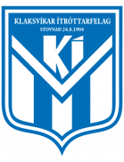 0:3 Víkingur Göta II Form: DWLW Form: WLDW |
-1.44 vs 0.9 | n/a | 66% | 1 | ⚽⚽ 2.87 |
📉 Home team has a dip in form recently | 📉 Away team has a dip in form recently |
| Sat. 22 Jun. | Belgium 2:0 Romania Form: WLWD Form: DWLD |
0.71 vs -0.72 | 1.52 | 59% | 1 | 😴 0.21 |
📉 Home team has a dip in form recently | 📉 Away team has a dip in form recently |
| Sat. 22 Jun. | V-Varen Nagasaki 2:0 Fujieda MYFC Form: LDWD Form: WLWL |
0.65 vs -1.49 | 1.57 | 56% | 1 | ⚽⚽ 2.19 |
📉 Home team has a dip in form recently | 📉 Away team has a dip in form recently |
| Sat. 22 Jun. | Yokohama FC 5:0 Roasso Kumamoto Form: WWWW Form: WDLL |
0.65 vs -1.26 | 1.57 | 56% | 1 | ⚽ 1.86 |
📉 Away team has a dip in form recently | |
| Sat. 22 Jun. | Víkingur Reykjavík 1:1 KR Reykjavík Form: WDLD Form: LDWW |
0.62 vs -1.25 | n/a | 55% | 0.5 | ⚽⚽⚽ 3.7 |
📉 Home team has a dip in form recently | |
| Sat. 22 Jun. | Defensor Sporting Club Unknown Montevideo Wanderers Form: WWWD Form: LWWL |
0.56 vs -1.26 | n/a | 52% | None | ⚽ 1.85 |
📉 Away team has a dip in form recently | |
| Sat. 22 Jun. | FK Panevezys 2:0 DFK Dainava Alytus Form: WWLL Form: LDDL |
0.54 vs -1.48 | 1.79 | 52% | 1 | 😴 0.58 |
🏥 📉 Home team has considerable injuries and a dip in form recently | 📉 Away team has a dip in form recently |
| Sat. 22 Jun. | FC Seoul 3:0 Suwon FC Form: LDWW Form: WWLL |
0.53 vs -1.43 | 2.16 | 51% | 1 | ⚽⚽ 2.4 |
📉 Away team has a dip in form recently | |
| Sat. 22 Jun. | Western Springs AFC 4:2 Manurewa AFC Form: WWDL Form: LWDL |
0.49 vs -1.14 | n/a | 50% | 1 | ⚽⚽⚽ 3.05 |
📉 Home team has a dip in form recently | 📉 Away team has a dip in form recently |
| Sat. 22 Jun. | Gangwon FC 2:3 Gimcheon Sangmu Form: WLLL Form: WLLW |
-1.38 vs 0.48 | 3.15 | 48% | 1 | ⚽⚽ 2.05 |
🏥 📉 Home team has considerable injuries and a dip in form recently | 📉 Away team has a dip in form recently |
| Sat. 22 Jun. | Energetik-BGU Minsk 2:5 BK Maxline Vitebsk Form: WLLL Form: WLWL |
-1.0 vs 0.47 | n/a | 48% | 1 | ⚽⚽ 2.65 |
📉 Home team has a dip in form recently | 📉 Away team has a dip in form recently |
| Sat. 22 Jun. | Montedio Yamagata 1:1 Vegalta Sendai Form: DDWL Form: WDLD |
0.44 vs -1.23 | 2.62 | 45% | 0.5 | ⚽ 1.52 |
📉 Home team has a dip in form recently | 📉 Away team has a dip in form recently |
| Sat. 22 Jun. | Eastern Suburbs AFC 1:0 Auckland City FC Form: WDWW Form: LWWW |
-0.78 vs 0.39 | 1.39 | 41% | 0 | ⚽ 1.58 |
||
| Sat. 22 Jun. | CA Boston River Unknown CA Cerro Form: WLDL Form: WWWL |
0.37 vs -1.12 | n/a | 40% | None | ⚽ 1.49 |
📉 Home team has a dip in form recently | 📉 Away team has a dip in form recently |
| Sat. 22 Jun. | Suwon Samsung Bluewings 3:0 Seongnam FC Form: DDLW Form: WWWL |
0.36 vs -1.25 | 1.82 | 38% | 1 | ⚽ 1.67 |
🏥 📉 Home team has considerable injuries and a dip in form recently | 📉 Away team has a dip in form recently |
| Sat. 22 Jun. | Fagiano Okayama 1:0 Thespa Gunma Form: LDLW Form: DDLL |
0.35 vs -1.24 | 1.55 | 38% | 1 | ⚽ 1.33 |
📉 Home team has a dip in form recently | 📉 Away team has a dip in form recently |
| Sat. 22 Jun. | Machida Zelvia 0:0 Avispa Fukuoka Form: DLWD Form: WWWD |
0.32 vs -1.05 | 1.79 | 35% | 0.5 | ⚽ 1.76 |
🏥 📉 Home team has considerable injuries and a dip in form recently | 🏥 Away team has considerable injuries |
| Sat. 22 Jun. | Urawa Red Diamonds 2:2 Kashima Antlers Form: LDLD Form: WWDD |
0.27 vs -1.08 | n/a | 32% | 0.5 | ⚽⚽ 2.04 |
📉 Home team has a dip in form recently | 📉 Away team has a dip in form recently |
| Sat. 22 Jun. | Olympique Beja 3:2 AET AS Marsa Form: WWWL Form: DWLL |
0.27 vs -1.03 | n/a | 31% | 1 | ⚽ 1.14 |
📉 Home team has a dip in form recently | 📉 Away team has a dip in form recently |
| Sat. 22 Jun. | Marconi Stallions FC 3:3 Sutherland Sharks FC Form: WLWW Form: DWWW |
0.26 vs -1.04 | n/a | 31% | 0.5 | ⚽ 1.51 |
📉 Home team has a dip in form recently | |
| Sat. 22 Jun. | HK Kópavogs 4:3 Stjarnan Gardabaer Form: LWLL Form: WLWL |
-0.94 vs 0.25 | n/a | 30% | 0 | ⚽ 1.98 |
📉 Home team has a dip in form recently | 📉 Away team has a dip in form recently |
| Sat. 22 Jun. | Thór Akureyri 1:2 Leiknir Reykjavík Form: DLDD Form: LLWL |
0.25 vs -0.79 | n/a | 30% | 0 | ⚽ 1.96 |
📉 Home team has a dip in form recently | 📉 Away team has a dip in form recently |
| Sat. 22 Jun. | St. George City FA 3:4 NWS Spirit Form: WLWW Form: WLLL |
0.25 vs -1.17 | n/a | 30% | 0 | ⚽ 1.98 |
📉 Home team has a dip in form recently | 📉 Away team has a dip in form recently |
| Sat. 22 Jun. | Samoa 1:2 Papua New Guinea Form: WLLL Form: LLDW |
0.24 vs -0.99 | n/a | 29% | 0 | ⚽⚽ 2.88 |
📉 Home team has a dip in form recently | 📉 Away team has a dip in form recently |
| Sat. 22 Jun. | FK Minsk 1:2 Arsenal Dzerzhinsk Form: LLDD Form: LWLW |
-0.56 vs 0.2 | n/a | 26% | 1 | ⚽ 1.51 |
📉 Home team has a dip in form recently | 📉 Away team has a dip in form recently |
| Sat. 22 Jun. | Cerro Largo FC Unknown Liverpool FC Montevideo Form: LWDW Form: LLLL |
-0.82 vs 0.2 | n/a | 26% | None | ⚽ 1.37 |
📉 Away team has a dip in form recently | |
| Sat. 22 Jun. | CA San Miguel 0:0 CA Talleres (Remedios de Escalada) Form: WLWW Form: DLLW |
0.19 vs -0.77 | 2.16 | 25% | 0.5 | 😴 0.84 |
📉 Home team has a dip in form recently | 📉 Away team has a dip in form recently |
| Sat. 22 Jun. | Dinamo 2 Minsk 2:0 FK Slonim 2017 Form: DWLL Form: WLDW |
0.18 vs -1.05 | n/a | 24% | 1 | ⚽ 1.01 |
📉 Home team has a dip in form recently | 📉 Away team has a dip in form recently |
| Sat. 22 Jun. | Ecuador 1:2 Venezuela Form: WWLW Form: DLDW |
0.16 vs -0.48 | n/a | 23% | 0 | 😴 0.04 |
📉 Home team has a dip in form recently | 🏥 📉 Away team has considerable injuries and a dip in form recently |
| Sat. 22 Jun. | Ventforet Kofu 1:2 Ehime FC Form: LDWD Form: LWWW |
0.13 vs -0.77 | n/a | 20% | 0 | ⚽⚽ 2.87 |
📉 Home team has a dip in form recently | |
| Sat. 22 Jun. | UMF Grindavík 3:1 Dalvík/Reynir Form: WDDD Form: LWLD |
0.11 vs -0.65 | n/a | 19% | 1 | ⚽⚽ 2.27 |
📉 Home team has a dip in form recently | 📉 Away team has a dip in form recently |
| Sat. 22 Jun. | Enppi SC 1:0 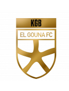 El Gouna FC Form: WDLD Form: LDLL |
0.1 vs -1.01 | 2.28 | 18% | 1 | ⚽ 1.61 |
📉 Home team has a dip in form recently | 📉 Away team has a dip in form recently |
| Sat. 22 Jun. | Fiji 1:0 Tahiti Form: WWWL Form: WDLL |
0.08 vs -0.65 | n/a | 17% | 1 | ⚽⚽ 2.35 |
📉 Home team has a dip in form recently | 📉 Away team has a dip in form recently |
| Sat. 22 Jun. | Tochigi SC 2:1 JEF United Chiba Form: LDLW Form: WWWW |
-0.74 vs 0.07 | 1.75 | 16% | 0 | ⚽⚽ 2.03 |
📉 Home team has a dip in form recently | |
| Sat. 22 Jun. | Renofa Yamaguchi 0:3 Iwaki FC Form: WLWW Form: DLWD |
0.07 vs -0.69 | 2.84 | 16% | 0 | ⚽ 1.43 |
📉 Home team has a dip in form recently | 📉 Away team has a dip in form recently |
| Sat. 22 Jun. | B71 Sandoy 1:2 FC Hoyvík Form: DDLL Form: LLLL |
0.07 vs -0.79 | n/a | 15% | 0 | ⚽⚽ 2.84 |
📉 Home team has a dip in form recently | 📉 Away team has a dip in form recently |
| Sat. 22 Jun. | FK Ostrovets 3:0 Torpedo-BelAZ 2 Zhodino Form: WWDD Form: LWLL |
0.06 vs -0.66 | n/a | 15% | 1 | ⚽⚽ 2.81 |
📉 Home team has a dip in form recently | 📉 Away team has a dip in form recently |
| Sat. 22 Jun. | BATE Borisov 3:1 Dynamo Brest Form: WLWL Form: WLLW |
0.05 vs -0.55 | n/a | 14% | 1 | ⚽⚽⚽ 3.51 |
📉 Home team has a dip in form recently | 📉 Away team has a dip in form recently |
| Sat. 22 Jun. | Operário Ferroviário Esporte Clube (PR) 0:1 Botafogo FC Form: WWWW Form: LWWW |
0.03 vs -0.79 | n/a | 12% | 0 | 😴 0.28 |
||
| Sat. 22 Jun. | Dinamo Samarqand 1:1 FK Andijon Form: DWLW Form: LDDW |
0.03 vs -0.76 | n/a | 12% | 0.5 | ⚽ 1.57 |
📉 Home team has a dip in form recently | 📉 Away team has a dip in form recently |
| Sat. 22 Jun. | Melville United 2:1 Hamilton Wanderers Form: LLWL Form: LLLL |
0.02 vs -1.02 | n/a | 11% | 1 | ⚽⚽ 2.8 |
📉 Home team has a dip in form recently | 📉 Away team has a dip in form recently |
| Sat. 22 Jun. | Tala'ea El Gaish 2:2 Smouha SC Form: WWDW Form: DWLW |
0.02 vs -0.84 | 2.9 | 11% | 0.5 | ⚽ 1.05 |
📉 Away team has a dip in form recently | |
| Sat. 22 Jun. | Miramar Misiones Unknown Danubio FC Form: WLWW Form: DDDW |
0.01 vs -0.66 | n/a | 11% | None | 😴 0.94 |
📉 Home team has a dip in form recently | 📉 Away team has a dip in form recently |
| Sat. 22 Jun. | Georgia 1:1 Czech Republic Form: WLDW Form: WLDL |
-0.01 vs 0.01 | 1.82 | 10% | 0.5 | ⚽⚽ 2.74 |
📉 Home team has a dip in form recently | 📉 Away team has a dip in form recently |
| Sat. 22 Jun. | Zhetysu Taldykorgan 1:2 Kaysar Kyzylorda Form: DWLD Form: WLWD |
0.0 vs -0.75 | n/a | 10% | 0 | 😴 0.9 |
📉 Home team has a dip in form recently | 📉 Away team has a dip in form recently |
| Sat. 22 Jun. | Monterey Bay FC 2:1 Oakland Roots SC Form: LDWW Form: LWWW |
-0.03 vs -0.59 | n/a | 9% | 1 | ⚽ 1.34 |
||
| Sat. 22 Jun. | Vestri Ísafjördur 1:5 Valur Reykjavík Form: DLWW Form: LLLD |
-0.93 vs -0.03 | n/a | 9% | 1 | ⚽⚽ 2.98 |
📉 Home team has a dip in form recently | 📉 Away team has a dip in form recently |
| Sat. 22 Jun. | Sogndal IL 2:0 Kongsvinger IL Form: LDWW Form: WDLL |
-0.03 vs -0.56 | n/a | 9% | 1 | ⚽⚽⚽ 3.7 |
📉 Away team has a dip in form recently | |
| Sat. 22 Jun. | Moca FC 3:2 Atlético Vega Real Form: DWWW Form: LDDW |
-0.03 vs -0.72 | n/a | 9% | 1 | 😴 0.59 |
📉 Away team has a dip in form recently | |
| Sat. 22 Jun. | HB Tórshavn II 0:4 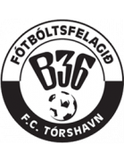 B36 Tórshavn II Form: LWLD Form: DDDW |
-0.04 vs -0.61 | n/a | 9% | 0 | ⚽⚽⚽ 3.36 |
📉 Home team has a dip in form recently | 📉 Away team has a dip in form recently |
| Sat. 22 Jun. | CSD Tristan Suarez 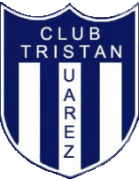 1:0 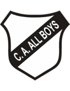 CA All Boys Form: WLLW Form: LDLW |
-0.04 vs -1.0 | 2.46 | 9% | 1 | 😴 0.82 |
📉 Home team has a dip in form recently | 📉 Away team has a dip in form recently |
| Sat. 22 Jun. | CA Defensores de Belgrano 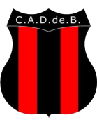 0:1 Gimnasia y Esgrima de Mendoza Form: DLLW Form: WWWD |
-0.04 vs -0.79 | 2.1 | 9% | 0 | ⚽⚽ 2.13 |
📉 Home team has a dip in form recently | |
| Sat. 22 Jun. | Qyzyljar Petropavlovsk 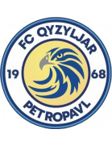 0:1 FC Astana Form: LDWD Form: DLLL |
-0.04 vs -0.74 | n/a | 9% | 0 | 😴 0.73 |
📉 Home team has a dip in form recently | 📉 Away team has a dip in form recently |
| Sat. 22 Jun. | Sydney Olympic FC postponed APIA Leichhardt FC Form: WLWD Form: WWLL |
-0.06 vs -0.44 | 1.04 | 9% | None | ⚽⚽⚽ 3.08 |
📉 Home team has a dip in form recently | 📉 Away team has a dip in form recently |
| Sat. 22 Jun. | Tokyo Verdy 1:0 Nagoya Grampus Form: WWWL Form: WLDL |
-0.06 vs -0.84 | 2.94 | 9% | 1 | ⚽ 1.71 |
📉 Home team has a dip in form recently | 🏥 📉 Away team has considerable injuries and a dip in form recently |
| Sat. 22 Jun. | Santos FC Nazca 2:0 Deportivo Coopsol Form: WWLW Form: LWDD |
-0.08 vs -0.69 | n/a | 8% | 1 | 😴 0.86 |
📉 Home team has a dip in form recently | 📉 Away team has a dip in form recently |
| Sat. 22 Jun. | FK TransINVEST 3:0 FC Dziugas Telsiai Form: LLWW Form: WWDW |
-0.08 vs -0.67 | 2.2 | 8% | 1 | ⚽ 1.87 |
📉 Home team has a dip in form recently | |
| Sat. 22 Jun. | Maharlika Taguig FC 0:3 Stallion Laguna FC Form: WLDL Form: LDLW |
-0.08 vs -0.79 | 1.39 | 8% | 0 | ⚽⚽⚽⚽ 4.92 |
📉 Home team has a dip in form recently | 📉 Away team has a dip in form recently |
| Sat. 22 Jun. | Cuiabá Esporte Clube (MT) postponed Atlético Clube Goianiense Form: WWDD Form: WLDD |
-0.09 vs -0.67 | 1.21 | 8% | None | ⚽⚽ 2.3 |
📉 Home team has a dip in form recently | 🏥 📉 Away team has considerable injuries and a dip in form recently |
| Sat. 22 Jun. | HB Tórshavn 3:0 KÍ Klaksvík Form: LWLL Form: WLLL |
-0.5 vs -0.11 | n/a | 8% | 0 | ⚽⚽ 2.13 |
📉 Home team has a dip in form recently | 📉 Away team has a dip in form recently |
| Sat. 22 Jun. | Peru 0:0 Chile Form: DWDL Form: LWDL |
-0.16 vs -0.12 | 3.85 | 8% | 0.5 | 😴 0 |
📉 Home team has a dip in form recently | 🏥 📉 Away team has considerable injuries and a dip in form recently |
| Sat. 22 Jun. | Clube de Regatas Brasil (AL) 1:0 Guarani Futebol Clube (SP) Form: LLWD Form: LLLD |
-0.15 vs -0.68 | n/a | 7% | 1 | ⚽ 1.48 |
📉 Home team has a dip in form recently | 📉 Away team has a dip in form recently |
| Sat. 22 Jun. | FC Suduroy 2:2 NSÍ Runavík II Form: WWLD Form: DWWW |
-0.15 vs -0.35 | n/a | 7% | 0.5 | ⚽ 1.98 |
📉 Home team has a dip in form recently | |
| Sat. 22 Jun. | Philippine Air Force FC 1:2 Manila Digger FC Form: LLLL Form: LLLW |
-0.15 vs -0.51 | n/a | 7% | 0 | ⚽⚽ 2.54 |
📉 Home team has a dip in form recently | 📉 Away team has a dip in form recently |
| Sat. 22 Jun. | Chungnam Asan 4:0 Gyeongnam FC Form: WDWW Form: DLLD |
-0.17 vs -0.55 | 2.5 | 7% | 1 | ⚽ 1.61 |
📉 Away team has a dip in form recently | |
| Sat. 22 Jun. | Sagan Tosu 3:0 Kyoto Sanga Form: LWLW Form: DWWL |
-0.17 vs -0.73 | 2.72 | 7% | 1 | ⚽ 1.79 |
📉 Home team has a dip in form recently | 📉 Away team has a dip in form recently |
| Sat. 22 Jun. | Club Deportivo Maldonado 1:3 CA Fénix Form: LDLD Form: WLLW |
-0.17 vs -0.73 | n/a | 7% | 0 | ⚽ 1.05 |
📉 Home team has a dip in form recently | 📉 Away team has a dip in form recently |
| Sat. 22 Jun. | CA Cerro 0:0 Danubio FC Form: WWWL Form: DDDW |
-0.18 vs -0.55 | n/a | 6% | 0.5 | ⚽ 1.1 |
📉 Home team has a dip in form recently | 📉 Away team has a dip in form recently |
| Sat. 22 Jun. | Hartford Athletic 0:1 Tampa Bay Rowdies Form: WDLW Form: WWLW |
-0.48 vs -0.18 | n/a | 6% | 1 | ⚽⚽ 2.8 |
📉 Home team has a dip in form recently | 📉 Away team has a dip in form recently |
| Sat. 22 Jun. | Gamba Osaka 2:1 Vissel Kobe Form: WWWW Form: DWWL |
-0.18 vs -0.4 | n/a | 6% | 1 | ⚽ 1.35 |
📉 Away team has a dip in form recently | |
| Sat. 22 Jun. | Atlántico FC 0:1 Universidad O&M FC Form: LLWW Form: DDWW |
-0.27 vs -0.18 | 1.23 | 6% | 1 | ⚽ 1.28 |
📉 Home team has a dip in form recently | |
| Sat. 22 Jun. | Racing Club de Montevideo 0:1 Defensor Sporting Club Form: LDWD Form: WWWD |
-0.46 vs -0.19 | n/a | 6% | 1 | ⚽ 1.65 |
📉 Home team has a dip in form recently | |
| Sat. 22 Jun. | Daegu FC 3:0 Jeonbuk Hyundai Motors Form: LLWW Form: LDLL |
-0.77 vs -0.2 | 2.78 | 6% | 0 | ⚽ 1.1 |
📉 Home team has a dip in form recently | 📉 Away team has a dip in form recently |
| Sat. 22 Jun. | CA Fénix Unknown CA River Plate Montevideo Form: WLLW Form: LDLD |
-0.2 vs -0.6 | n/a | 6% | None | 😴 0.96 |
📉 Home team has a dip in form recently | 📉 Away team has a dip in form recently |
| Sat. 22 Jun. | FC Anyang 2:1 Seoul E-Land Form: LWLW Form: WWLL |
-0.2 vs -0.63 | 2.62 | 6% | 1 | ⚽⚽ 2.16 |
📉 Home team has a dip in form recently | 📉 Away team has a dip in form recently |
| Sat. 22 Jun. | Daejeon Hana Citizen 2:1 Gwangju FC Form: WDLW Form: WWWL |
-0.2 vs -0.82 | 3.55 | 6% | 1 | ⚽ 1.66 |
🏥 📉 Home team has considerable injuries and a dip in form recently | 🏥 📉 Away team has considerable injuries and a dip in form recently |
| Sat. 22 Jun. | CA Temperley 1:0 Quilmes AC Form: WLLW Form: WDLL |
-0.22 vs -0.41 | 2.24 | 6% | 1 | ⚽ 1.61 |
📉 Home team has a dip in form recently | 📉 Away team has a dip in form recently |
| Sat. 22 Jun. | CSD Madryn 1:0 AA Estudiantes (Río Cuarto) Form: DWWD Form: DLLW |
-0.36 vs -0.22 | n/a | 6% | 0 | 😴 0.19 |
📉 Away team has a dip in form recently | |
| Sat. 22 Jun. | Grêmio Foot-Ball Porto Alegrense 0:1 Sport Club Internacional Form: LLLL Form: DWWW |
-0.26 vs -0.92 | 2.0 | 5% | 0 | ⚽⚽ 2.38 |
🏥 📉 Home team has considerable injuries and a dip in form recently | 🏥🏥 Away team has MAJOR injuries |
| Sat. 22 Jun. | Lokomotiv Tashkent 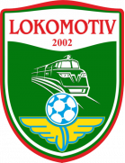 1:2 Sogdiana Jizzakh Form: LLLD Form: LWLW |
-0.26 vs -0.41 | n/a | 5% | 0 | ⚽ 1.98 |
📉 Home team has a dip in form recently | 📉 Away team has a dip in form recently |
| Sat. 22 Jun. | Deportes Copiapó 2:2 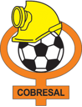 CD Cobresal Form: LWWW Form: DLLL |
-0.26 vs -0.54 | n/a | 5% | 0.5 | ⚽⚽ 2.39 |
📉 Away team has a dip in form recently | |
| Sat. 22 Jun. | Hills United 0:2 Wollongong Wolves FC Form: LLWL Form: DWLW |
-0.26 vs -0.37 | n/a | 5% | 0 | ⚽⚽⚽ 3.18 |
📉 Home team has a dip in form recently | 📉 Away team has a dip in form recently |
| Sat. 22 Jun. | Naftan Novopolotsk 0:1 Slavia Mozyr Form: WLWD Form: LDDD |
-0.47 vs -0.27 | n/a | 5% | 1 | ⚽⚽ 2.25 |
📉 Home team has a dip in form recently | 📉 Away team has a dip in form recently |
| Sat. 22 Jun. | CA Brown (Adrogué) 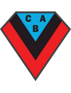 0:0 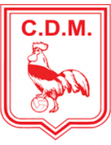 CD Morón Form: LDLD Form: LWLL |
-0.27 vs -0.48 | 2.8 | 5% | 0.5 | ⚽ 1.2 |
📉 Home team has a dip in form recently | 📉 Away team has a dip in form recently |
| Sat. 22 Jun. | Shonan Bellmare 0:1 FC Tokyo Form: LWDL Form: LWDW |
-0.6 vs -0.27 | 2.84 | 5% | 1 | ⚽⚽ 2.5 |
🏥 📉 Home team has considerable injuries and a dip in form recently | |
| Sat. 22 Jun. | Cavalry FC 1:1 Atlético Ottawa Form: DDWD Form: WDLW |
-0.31 vs -0.27 | n/a | 5% | 0.5 | ⚽ 1.09 |
📉 Home team has a dip in form recently | 📉 Away team has a dip in form recently |
| Sat. 22 Jun. | Kagoshima United 3:0 Oita Trinita Form: DDLW Form: LDWL |
-0.27 vs -0.59 | 2.64 | 5% | 1 | ⚽ 1.21 |
📉 Home team has a dip in form recently | 📉 Away team has a dip in form recently |
| Sat. 22 Jun. | Kashiwa Reysol 0:1 Sanfrecce Hiroshima Form: LWLL Form: WWWL |
-0.28 vs -0.44 | 3.95 | 4% | 0 | ⚽ 1.78 |
📉 Home team has a dip in form recently | 📉 Away team has a dip in form recently |
| Sat. 22 Jun. | East Coast Bays AFC 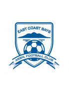 1:3 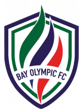 Bay Olympic FC Form: DWLW Form: LLWL |
-0.5 vs -0.3 | n/a | 4% | 1 | ⚽ 1.5 |
📉 Home team has a dip in form recently | 📉 Away team has a dip in form recently |
| Sat. 22 Jun. | Club Almagro 1:2 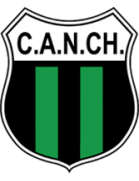 CA Nueva Chicago Form: LDDD Form: WLWD |
-0.33 vs -0.5 | 2.78 | 3% | 0 | 😴 0.95 |
📉 Home team has a dip in form recently | 📉 Away team has a dip in form recently |
| Sat. 22 Jun. | Atlético San Cristóbal 1:6 Delfines del Este FC Form: LLLW Form: DLWD |
-0.43 vs -0.35 | 1.23 | 3% | 1 | ⚽⚽ 2.42 |
📉 Home team has a dip in form recently | 📉 Away team has a dip in form recently |
| Sat. 22 Jun. | Shakhter 2 Soligorsk 3:5 Belshina Bobruisk Form: DWWL Form: WWLD |
-0.4 vs -0.35 | n/a | 3% | 1 | ⚽ 1.75 |
📉 Home team has a dip in form recently | 📉 Away team has a dip in form recently |
| Sat. 22 Jun. | ADA Jaén 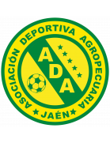 21:15 Pirata FC Form: WLLW Form: LLWD |
-0.36 vs -0.55 | n/a | 3% | None | ⚽⚽ 2.69 |
📉 Home team has a dip in form recently | 📉 Away team has a dip in form recently |
| Sat. 22 Jun. | Júbilo Iwata 1:1 Cerezo Osaka Form: LLDD Form: DWWD |
-0.42 vs -0.38 | 1.77 | 2% | 0.5 | ⚽ 1.53 |
📉 Home team has a dip in form recently | |
| Sat. 22 Jun. | CA Progreso Unknown Racing Club de Montevideo Form: LLWD Form: LDWD |
-0.4 vs -0.38 | n/a | 2% | None | ⚽⚽ 2.33 |
🏥 📉 Home team has considerable injuries and a dip in form recently | 📉 Away team has a dip in form recently |
| Sat. 22 Jun. | Criciúma Esporte Clube 2:1 Botafogo de Futebol e Regatas Form: LWDW Form: WDLW |
-0.52 vs -0.44 | n/a | 1% | 0 | ⚽⚽ 2.05 |
🏥 📉 Away team has considerable injuries and a dip in form recently | |
| Sat. 22 Jun. | Albirex Niigata 2:2 Kawasaki Frontale Form: WDWD Form: DWWL |
-0.51 vs -0.49 | 2.68 | 0% | 0.5 | ⚽⚽ 2.75 |
📉 Home team has a dip in form recently | 🏥🏥 📉 Away team has MAJOR injuries and a dip in form recently |
Last updated 14:18:23 2024-06-28
Privacy Policy - 18+. Gamble Responsibly. - Terms